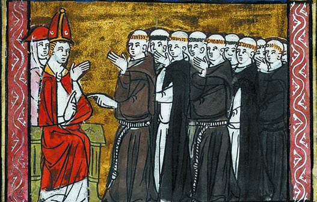
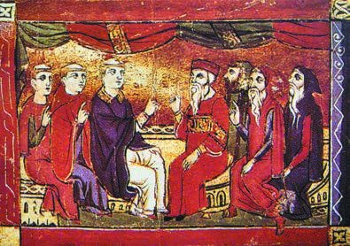
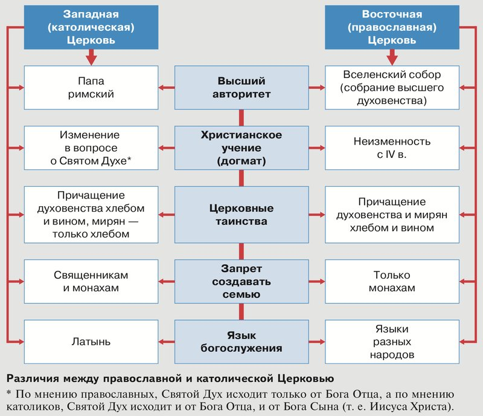
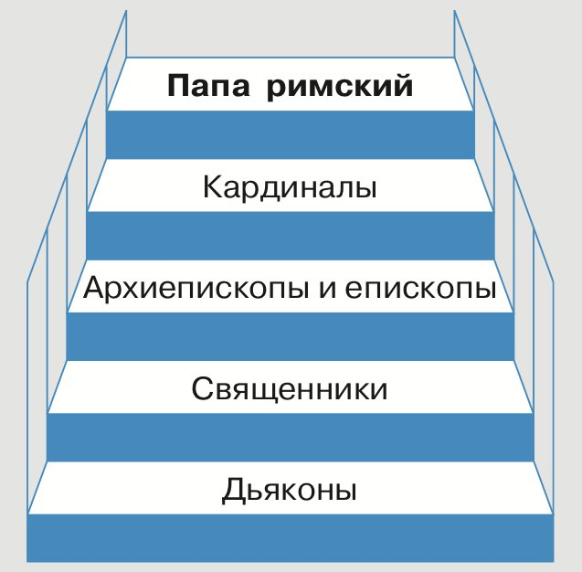
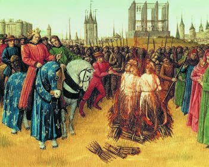
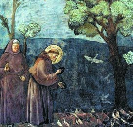

Католическая Церковь и духовенство
Амина, это история о том, как христиане Европы разделились на православных и католиков и как Церковь на Западе стала самой влиятельной и самой богатой силой.
Представь класс, где важные дела всегда решали все вместе, на общем собрании. Однажды староста одной половины класса заявил: «Теперь главный я, и я не ошибаюсь». Другая половина ответила: «Нет, у нас главное — общее собрание». Никто не уступил, и класс разделился надвое.
Примерно так, по учебнику, в 1054 году разделилась христианская Церковь. Восточных христиан стали называть православными, а западных — католиками. Во главе католиков стоял папа римский.
На Западе Церковь стала похожа на большое государство: своя лестница начальников, свой налог, свой суд, свои распоряжения. Она могла наказать непослушного феодала и даже короля. А тех, кто выступал против неё, называла еретиками и преследовала.
Главный вопрос параграфа: чем можно объяснить влияние Церкви и духовенства на средневековое европейское общество? Держи его в голове. Вот четыре части темы:

У каждого шага написано, на какой странице учебника искать. Внизу шага есть «Подробнее, как в учебнике»: там всё, что есть на этих страницах, ничего не пропущено. Сначала учи по коротким шагам, а перед уроком открой «подробнее».
Надпись вверху шага подскажет, откуда он: синяя — из учебника, золотая — задание учебника, оранжевая — сверх учебника (пересказ, словарик, игры, самопроверка). В «Содержании» шаги так же разбиты на группы.
Подробнее, как в учебнике · с. 84
- Главный вопрос параграфа: чем можно объяснить влияние Церкви и духовенства на средневековое европейское общество?
- Ключевые слова параграфа: духовенство, иерархия, инквизиция, монашеский орден, церковная десятина. Все они есть в словарике (шаги 13–14).
- Человек, которого нужно запомнить: Франциск Ассизский. О нём — шаг 12.
- Иллюстрация в начале параграфа: «Римский папа с монахами». Миниатюра, XV век. Подпись: в раннехристианскую эпоху титул «папа» применялся по отношению ко всем епископам и выражал особое почтение. Позднее он закрепился лишь за епископами Рима и Александрии. Римский папа сегодня — это епископ города Рима, предстоятель (глава) Римско-католической церкви, верховный правитель государства Ватикан.
- Таблица дат «Мир / Россия» — на шаге 2.
- § 8 — второй параграф главы III «Средневековое европейское общество». Итоги главы будут в конце § 9.
Лента времени
Это все даты из таблицы в начале параграфа, сверху вниз от ранних к поздним. Нажми на дату, чтобы прочитать, что случилось. Красные помечены «Россия», как в учебнике.
О датах из колонки «Россия» в тексте § 8 не рассказано. Они в таблице для сравнения: что происходило в это же время на Руси.
Ещё даты, которые встречаются в тексте параграфа
- Раннехристианская эпоха (первые века христианства) — титул «папа» применялся ко всем епископам (подпись к миниатюре, с. 84).
- IV в. — по схеме на с. 85, с этого времени христианское учение Восточной (православной) Церкви неизменно.
- Начало X в. — в Западной Церкви началась клюнийская реформа (п. 1, с. 85).
- К середине XI в. — большая часть Европы была христианской (п. 1, с. 84).
- XI в. — «Диктат папы», отрывок из него — в задании «Работаем с источником» (с. 91).
- XII–XIII вв. — самыми опасными еретиками стали альбигойцы (п. 4, с. 89).
- 1209 г. — папа римский призвал к походу против еретиков, начались Альбигойские войны (п. 4, с. 89).
- Начало XIII в. — возникли нищенствующие монашеские ордены (п. 4, с. 90).
- Первая треть XIII в. — для поиска и наказания еретиков возникла святая инквизиция (п. 4, с. 89–90).
- К 1229 г. — вооружённая борьба с альбигойцами завершилась (п. 4, с. 89).
- XIV в. — папа разрешил продажу индульгенций (п. 3, с. 88).
- Даты в подписях к иллюстрациям: «Римский папа с монахами», миниатюра, XV в. (с. 84); «Диспут (спор) католиков и православных» — средневековое изображение, век не указан (с. 86); «Сожжение еретиков», миниатюра из Больших французских хроник, XV в. (с. 89); «Святой Франциск Ассизский проповедует птицам», фреска Дж. ди Бондоне, XIII в. (с. 90).
1Восток и Запад: разные условия
К середине XI века большая часть Европы была христианской. Но жизнь Церкви на Востоке и на Западе сложилась по-разному.
Восток
Крепкая власть императора. Сохранялась древняя образованность. Были города, где верующих возглавляли епископы.
Запад
Рим — как остров среди моря недавних варваров. Их священники едва могли сказать пару слов на латыни.
Учебник пишет, что среди священников и монахов на Западе тогда было много безграмотных, и многие жили не по строгим церковным правилам.
Клюнийская реформа
С начала X века в Западной Церкви боролись за порядок и дисциплину среди священников и в монастырях. Это называют клюнийской реформой — по имени аббатства Клюни во Франции. Аббатство — монастырь, которым руководит аббат.
Кто объединял Запад
Западный христианский мир объединяла только фигура папы римского. Поэтому реформаторы, укрепляя Церковь, опирались на авторитет папы и провозглашали его непогрешимость — то есть то, что папа не ошибается.
На папский престол всё чаще восходили сильные люди, которые сами верили в эту непогрешимость. Римские епископы считали себя наследниками апостола Петра. По преданию, Пётр проповедовал в Риме. Папы считали, что к ним перешло его первенство в Церкви.
Трудные слова
- Реформа — переустройство, большие перемены в каком-то деле.
- Дисциплина — порядок: все соблюдают правила.
- Папский престол — место главы Церкви, как трон у короля. «Взойти на престол» — стать папой.
- Апостолы — по христианскому учению, ближайшие ученики Иисуса Христа, которые проповедовали его учение.
- Первенство — право быть первым, главным.
Подробнее, как в учебнике · с. 84–86, п. 1
- Пункт 1 «Разделение православных и католиков». К середине XI в. большая часть Европы была христианской. Однако на Востоке и Западе сложились разные условия для Церкви.
- В Византии была крепкая императорская власть, сохранялась древняя образованность, существовали города, в которых верующих возглавляли епископы. На Западе папский Рим был островом среди моря недавних варваров, священники которых едва могли связать пару слов на латыни. Среди священников и монахов царили безграмотность и распутство (то есть жизнь не по церковным правилам).
- С начала X в. в Западной Церкви шла борьба за усиление дисциплины священников и монастырей — клюнийская реформа, названная так в честь аббатства Клюни во Франции.
- Западный христианский мир объединяла только фигура папы римского. Укрепляя Церковь, реформаторы обращались к авторитету папы, провозглашая его непогрешимость. На папский престол всё чаще восходили сильные личности, сами верившие в эту непогрешимость. Римские епископы считали себя наследниками апостола Петра, проповедовавшего в Риме, и считали, что к ним перешло его первенство в Церкви.
1Раскол 1054 года
Папы хотели абсолютной власти — над всей Церковью. На Востоке с этим не соглашались. Там римского епископа считали только одним из пяти патриархов, пусть и первым по чести. (Пять главных епископов-патриархов ты помнишь по § 1.)
В 1054 году в Константинополе папа римский (через своего представителя) и патриарх Константинопольский предали друг друга анафеме — отлучению от Церкви. Этот год ты уже встречала в § 2, про Византию.
Повод
Разногласия о Символе веры и об обрядах.
Главная причина
Притязания пап на власть во всей Церкви.
Чем повод отличается от причины?
Два друга давно спорят, кто из них капитан команды, — это причина. А поругались они в тот день, когда не поделили мяч, — это повод. Без причины из-за мяча не поссорились бы так сильно.
Символ веры — краткое изложение главных положений христианской веры. Обряды — порядок церковных служб и действий. Притязания — требования того, что человек считает своим по праву.
Христианские народы далеко не сразу поняли, что произошёл раскол. Но постепенно пропасть между Востоком и Западом становилась глубже. После раскола восточных христиан стали называть православными, а западных — католиками.

Подсказка к заданию у картинки
Это спор, значит, стороны сидят друг напротив друга. Сравни людей слева и справа: лица, волосы на голове, бороды, головные уборы, одежду. Про особую стрижку духовенства на Западе ты прочитаешь в шаге 6. Отвечай так: «Слева… потому что… Справа… потому что…»
Подробнее, как в учебнике · с. 86, п. 1
- Притязания папства на абсолютную власть встретили отпор на Востоке, где римского епископа рассматривали только как одного из пяти патриархов, пусть и первенствующего по чести.
- В 1054 г. в Константинополе папа римский (через своего представителя) и патриарх Константинопольский предали друг друга анафеме — отлучению от Церкви. Поводом были разногласия, касавшиеся Символа веры и обрядов, но главной причиной стали притязания папства.
- Христианские народы далеко не сразу осознали произошедший раскол, но постепенно пропасть между Востоком и Западом углублялась. После раскола восточных христиан начали именовать православными, а западных — католиками.
- Иллюстрация на с. 86: «Диспут (спор) католиков и православных». Средневековое изображение. Задание: определите, где изображены православные священники, а где — католические. Аргументируйте свой ответ.
- Вопросы учебника после пункта 1: 1. Где находились два центра христианства в раннее Средневековье? 2. Какое событие произошло в 1054 г.? Что оно обозначало?
1Чем различались две Церкви
На с. 85 учебника есть схема. По ней видно, в каких пяти важных вопросах после раскола разошлись две Церкви. Сначала посмотри на схему, а ниже то же самое крупно, по строчкам: слева Запад, справа Восток, как в книге.

* По мнению православных, Святой Дух исходит только от Бога Отца, а по мнению католиков, Святой Дух исходит и от Бога Отца, и от Бога Сына (то есть Иисуса Христа).
Трудные слова в схеме
- Высший авторитет — тот, чьё слово в Церкви самое главное.
- Вселенский собор — собрание высшего духовенства. Ты помнишь соборы по § 1: на них решали споры о вере.
- Догмат — положение веры, которое Церковь признала истиной (тоже из § 1).
- Таинства — по учению Церкви, священные обряды: крещение, причащение, венчание и другие.
- Причащение — таинство, во время которого верующие принимают освящённые хлеб и вино.
- Миряне — верующие, которые не относятся к духовенству.
- Богослужение — церковная служба.
Подсказка к заданию у схемы
Иди по схеме сверху вниз, строчка за строчкой. Назови вопрос из середины (например, «язык богослужения») и скажи, как было у католиков и как у православных. Пять строчек — пять предложений.
Подробнее, как в учебнике · с. 85, п. 1
- Схема на с. 85 «Различия между православной и католической Церковью». Слева — Западная (католическая) Церковь, справа — Восточная (православная), посередине — пять вопросов.
- Высший авторитет: у католиков — папа римский; у православных — Вселенский собор (собрание высшего духовенства).
- Христианское учение (догмат): у католиков — изменение в вопросе о Святом Духе; у православных — неизменность с IV в.
- Церковные таинства: у католиков — причащение духовенства хлебом и вином, мирян — только хлебом; у православных — причащение духовенства и мирян хлебом и вином.
- Запрет создавать семью: у католиков — священникам и монахам; у православных — только монахам.
- Язык богослужения: у католиков — латынь; у православных — языки разных народов.
- Сноска: по мнению православных, Святой Дух исходит только от Бога Отца, а по мнению католиков, Святой Дух исходит и от Бога Отца, и от Бога Сына (т. е. Иисуса Христа).
- Задание у схемы: используя схему, расскажите о различиях между католической и православной Церковью.
2Белое и чёрное духовенство
Помнишь три сословия из § 7: молящиеся, воюющие и работающие? Служители католической Церкви — духовенство, или клир, — и были сословием «молящихся».
Клирики давали обет — торжественное обещание. Они отказывались от создания семьи и посвящали себя служению Богу.
Духовенство делилось на две части:
Белое духовенство
Жили в миру, то есть среди простых людей.
Чёрное духовенство
Ушли от суеты мира ради молитв и спасения души.
Общины монахов создавали монастыри и избирали руководителя — аббата. Часто монастыри объединялись в монашеские ордены (от латинского ordo — «чин, порядок»). Это похоже на несколько школ, которые живут по одним общим правилам.
В Средние века люди нередко уходили в монастырь. Будущие монахи — послушники — около года жили по правилам монастыря и показывали аббату и братии силу своей веры.
Послушника могли заставить толочь воду в ступе и одновременно читать молитвы. Так воспитывали смирение, выдержку и терпение. Если послушник проходил все испытания, его постригали в монахи.
Выстриженный на макушке круг — тонзура — был знаком того, что человек принадлежит к духовному сословию.
Трудные слова
- Устав — свод правил жизни в монастыре. Братия — все монахи одного монастыря.
- Толочь воду в ступе — ступа — сосуд, в котором толкут зерно. Толочь в ней воду — бесполезная работа. Так и сейчас говорят о пустом деле.
- Смирение — умение спокойно принимать трудности и не гордиться.
Подробнее, как в учебнике · с. 86–87, п. 2
- Пункт 2 «Католическое духовенство». Служители западной католической Церкви — духовенство, или клир, — составляли сословие «молящихся». Клирики давали торжественное обещание — обет: отказывались от создания семьи и посвящали себя служению Богу.
- Духовенство разделялось на белое и чёрное. В состав белого духовенства входили священники, жившие в миру, т. е. среди простых людей. Чёрным духовенством именовали монахов, удалившихся от суеты мира ради молитв и спасения души. Общины монахов создавали монастыри и избирали руководителя — аббата. Часто монастыри объединялись в монашеские ордены (от лат. ordo — чин, порядок).
- Подробнее (с. 87). В Средние века уход в монастырь был нередким явлением. Послушники — будущие монахи — около года жили по правилам монастырского устава, демонстрируя аббату и братии силу своей веры. Послушника могли заставить толочь воду в ступе, одновременно читая молитвы, чтобы воспитать у будущего монаха смирение, выдержку и терпение. Если послушник проходил все испытания, его постригали в монахи. Выстриженный на макушке круг — тонзура — был признаком принадлежности к духовному сословию.
2Привилегии и церковная лестница
Духовенство играло огромную роль в жизни средневекового общества. Поэтому у него было особое положение и привилегии — особые права, которых нет у других:
- не платило налогов;
- не несло воинской службы;
- подчинялось только церковному суду.
А всё население Западной Европы платило церковную десятину — специальный налог на содержание священников и монахов.
Иерархия
Управление католической Церковью было построено по принципу иерархии. Это лестница: каждый подчиняется тому, кто стоит ступенькой выше. Похоже на школу: директор, его заместители, учителя и их помощники.
Папа римский имел огромную власть в Западной Европе. Он следил за чистотой веры, распоряжался имуществом Церкви и издавал распоряжения — буллы. Они были обязательны для всех католиков.
Папа назначал руководителей церковных областей — епископов и архиепископов. Епископов, особенно приближённых к папе, называли кардиналами.
В каждой церковной области было много приходов и монастырей. Епископ назначал священников. Они проводили богослужения, отпевали умерших и совершали церковные таинства: крещение, причащение, венчание и другие. Во всех католических странах службы шли на латыни. На нижней ступени стояли дьяконы: они помогали священникам.

Подсказка к заданию у схемы
Иди по лестнице сверху вниз. Для каждой ступени скажи: кто это, кто его назначает или выбирает и что он делает. Начни так: «Во главе католической Церкви стоял…»
Приход — община верующих вокруг одной церкви (ты помнишь это слово по § 1).
Подробнее, как в учебнике · с. 87–88, п. 2
- Огромная роль духовенства в жизни средневекового общества определила особое положение этого сословия, его привилегии. Духовенство освобождалось от уплаты налогов и воинской службы, подчинялось только церковному суду. Всё население Западной Европы платило церковную десятину — специальный налог на содержание священников и монахов.
- Управление католической Церковью было построено по принципу иерархии. Церковь возглавлял папа римский, который избирался пожизненно. Он имел огромную власть в Западной Европе: следил за чистотой веры, распоряжался церковным имуществом, издавал распоряжения (буллы), обязательные для всех католиков. Папа назначал руководителей церковных областей — епископов и архиепископов. Некоторые особенно приближённые к папе епископы назывались кардиналами.
- В каждой церковной области было много церковных приходов и монастырей. Руководивший ими епископ назначал священников, в обязанности которых входило проведение богослужения, отпевание умерших и совершение церковных таинств: крещения, причащения, венчания новобрачных и др. Во всех католических странах церковные службы проходили на латинском языке.
- Нижнюю ступень церковной иерархии занимали дьяконы. В их обязанности входила помощь священникам в проведении служб и совершении церковных таинств.
- Схема на с. 87 «Церковная иерархия в католической Церкви»: сверху вниз — папа римский; кардиналы; архиепископы и епископы; священники; дьяконы. Задание: с помощью схемы расскажите об управлении католической Церковью.
- Вопросы учебника после пункта 2 (с. 88): 1. Чем отличается чёрное духовенство от белого? 2. Что такое церковная десятина?
3Божий мир и отлучение
В странах Западной Европы была феодальная раздробленность: страна делилась на множество владений, и феодалы часто воевали друг с другом. Учебник пишет, что это помогало расти влиянию папы римского.
По почину папы ввели правила Божьего мира. Враждующим феодалам запрещалось:
- нападать на безоружных;
- сражаться в определённые дни недели;
- сражаться во время церковных праздников.
Представь соседей, которые всё время ссорятся. Им говорят: «Ссориться — плохо, но хотя бы в эти дни — никаких драк, и не трогайте тех, кто не может защититься». А следит за этим договором Церковь.
Отлучение от Церкви
Если феодал нарушал эти правила, папа мог отлучить его от Церкви. Это было равносильно приговору за преступление. И вот что из этого следовало:
Клятву верности вассал давал сеньору — ты помнишь вассальную присягу из § 7. Если вассалы больше не обязаны служить, сеньор остаётся без войска. Поэтому даже король не чувствовал себя в безопасности.
Трудные слова
- По почину — по инициативе, то есть кто-то первым это предложил и начал.
- Равносильно — то же самое по силе, по значению.
- Отступник — так учебник называет отлучённого: тот, кто отступил от правил Церкви.
- Раскаиваться — признавать свою вину и сожалеть о сделанном.
Подробнее, как в учебнике · с. 88, п. 3
- Пункт 3 «Власть папы римского». Феодальная раздробленность в странах Западной Европы способствовала росту влияния папы римского. По его инициативе были установлены правила Божьего мира: враждовавшим феодалам запрещалось нападать на безоружных, сражаться в определённые дни недели и во время церковных праздников.
- Если феодал нарушал эти условия, папа римский мог отлучить его от Церкви, что было равносильно приговору за преступление. Вассалы отлучённого от Церкви сеньора освобождались от клятвы верности. Прощение наступало, только когда отступник являлся на церковный суд и раскаивался в содеянном. Даже король не чувствовал себя в безопасности: с ним глава католической Церкви тоже мог поступить подобным образом.
3Конклав и богатство Церкви
Папы римские не скрывали, что хотят главенствовать во всём западном мире. Они считали церковную власть выше светской — то есть выше власти королей и феодалов.
Папу выбирало собрание кардиналов. Чтобы никто не мог вмешаться в выборы, кардиналов на это время запирали в особом помещении. Отсюда слово конклав — «закрытое на ключ».
Самая богатая организация
В Средние века Церковь стала не только самой влиятельной, но и самой богатой организацией. Откуда приходило богатство:
Индульгенция — грамота о прощении некоторых грехов. Учебник пишет, что в XIV веке папа нашёл новый источник доходов: разрешил продажу индульгенций.
Трудные слова
- Главенствовать — быть главным над всеми.
- Светская власть — власть не Церкви, а королей, князей, феодалов.
- Пожертвование — то, что человек отдаёт добровольно, в подарок.
- Казна — все деньги и ценности государства или организации.
Подробнее, как в учебнике · с. 88, п. 3
- Папы римские не скрывали своих притязаний на главенство во всём западном мире, считая церковную власть выше светской. Чтобы исключить возможность любого вмешательства, собрание кардиналов, выбиравших главу Церкви, на время выборов запирали в специальном помещении. Отсюда произошло слово «конклав», т. е. «закрытое на ключ».
- В Средние века Церковь стала не только самой влиятельной, но и самой богатой организацией. Ей принадлежало около трети всех земельных владений Европы. В казну Церкви также поступали денежные пожертвования от королей, феодалов и простых людей, желавших спасти свою душу. В XIV в. папа нашёл новый источник доходов: разрешил продажу индульгенций — грамот о прощении некоторых грехов.
- Вопросы учебника после пункта 3 (с. 88): 1. Что такое отлучение от Церкви? Кого и за что папы могли отлучить от Церкви? 2. В чём проявлялось могущество католической Церкви?
4Еретики и альбигойцы
Не все миряне были довольны Церковью. Одних возмущало её богатство и недостойная жизнь некоторых священников и монахов. Других не устраивали ответы плохо образованных священников на вопросы о Боге, спасении и устройстве мира.
Тех, кто выступал против Церкви, называли еретиками («отступниками»), а их учения — ересью. Что делали еретики:
- осуждали Церковь за богатства, которые, по их мнению, были нажиты неправедно;
- призывали отказаться от всякой собственности и жить в бедности;
- толковали догматы по-своему и считали истинными христианами себя;
- критиковали поведение клириков.
А клирики в ответ часто обвиняли их в вероотступничестве — в том, что они отказались от веры.
Альбигойцы
Самыми опасными для Церкви еретиками в XII–XIII веках стали альбигойцы. Их движение возникло среди горожан и крестьян в городе Альби на юге Франции. Альбигойцы выступали против догматов католической Церкви, против того, что Церковь владеет землёй, и против десятины.
Несправедливость и жестокость мира они объясняли тем, что его создал не Бог, а дьявол. По их учению, чтобы попасть в Царство Божие, нужно отказаться от всех мирских желаний и удовольствий.
Альбигойцев поддержали и некоторые крупные феодалы юга Франции. Они забирали себе земли, которые раньше принадлежали Церкви, и переставали платить десятину.
Альбигойские войны
Трудные слова
- Миряне — верующие, которые не относятся к духовенству.
- Невежественный — мало знающий, плохо образованный.
- Толковать — объяснять смысл. «Толковали на свой лад» — объясняли по-своему, не так, как Церковь.
- Неправедно — нечестно, несправедливо.
Подробнее, как в учебнике · с. 88–89, п. 4
- Пункт 4 «Борьба католической Церкви с еретиками». Не все миряне были довольны Церковью. Одних возмущало и раздражало богатство Церкви и неблаговидный (недостойный) образ жизни некоторых представителей духовенства, других не удовлетворяли ответы невежественных священников на вопросы о Боге, спасении и устройстве мира.
- Выступавших против Церкви называли еретиками («отступниками»), а их учения — ересью. Еретики осуждали Церковь за неправедно нажитые богатства, призывали отказаться от всякой собственности и жить в бедности, толковали на свой лад догматы, считали себя истинными христианами и критиковали поведение клириков, а те, часто в отместку, обвиняли их в вероотступничестве.
- Самыми опасными еретиками в XII–XIII вв. стали альбигойцы. Это еретическое движение возникло в среде горожан и крестьян в городе Альби, расположенном в Южной Франции. Альбигойцы выступали против догматов католической Церкви, церковного землевладения и церковной десятины. Несправедливость и жестокость современного им мира они объясняли тем, что его создал не Бог, а дьявол. Для того чтобы попасть в Царство Божие, нужно отказаться от всех мирских желаний и удовольствий.
- Сторонниками альбигойцев выступили и некоторые крупные феодалы юга Франции. Они присоединяли к своим владениям земли, принадлежавшие ранее Церкви, и переставали платить церковную десятину.
- В 1209 г. папа римский призвал феодалов севера Франции и других стран выступить в поход против еретиков. Участникам предстоящего похода Церковь прощала все грехи и долги. Начались жестокие Альбигойские войны. Рыцари уничтожали в городах и сёлах юга Франции всех, кого подозревали в ереси. Вооружённая борьба завершилась к 1229 г.
4Святая инквизиция
Войны закончились, но преследования еретиков продолжались. В первой трети XIII века для поиска и наказания еретиков появились специальное следствие и суд — святая инквизиция (от латинского inquisitio — «расследование, розыск»).
Первая треть XIII века — это примерно 1200–1233 годы. В таблице дат учебника год учреждения инквизиции — 1215-й.

Инквизиторы были образованными богословами и юристами. 90 % их расследований заканчивались обвинительными приговорами — то есть человека признавали виновным.
На допросах инквизиторы старались добиться от обвиняемых признания и покаяния, а если человек стоял на своём, применяли пытки. Большинство осуждённых получали церковные наказания. Тех, кого считали особо опасными, передавали светским властям и требовали наказать «без пролития крови», что означало смертную казнь.
Подсказка к заданию у миниатюры
Инициатор — тот, кто начинает дело, по чьему решению оно делается. Рассмотри всех людей у костра: кто из них выделяется одеждой и тем, где находится? Потом перечитай последнее предложение подписи: кому инквизиторы передавали самых опасных осуждённых?
Богослов — учёный, который изучает вопросы веры. Юрист — знаток законов.
Подробнее, как в учебнике · с. 89–90, п. 4
- Однако преследования еретиков продолжались и в последующие годы. В первой трети XIII в. для поиска и наказания еретиков возникли специальное следствие и суд — святая инквизиция (от лат. inquisitio — расследование, розыск).
- Иллюстрация на с. 89: «Сожжение еретиков». Миниатюра из Больших французских хроник, XV век. Подпись: инквизиторы были образованными богословами и юристами, поэтому, как пишет учебник, 90 % их расследований заканчивались обвинительными приговорами. На допросах инквизиторы старались до последнего добиться от обвиняемых признания и покаяния, а встретившись с упорством, прибегали к безжалостным пыткам. Большинство осуждённых приговаривались к церковным наказаниям. Но тех, кого считали особо опасными, передавали светским властям, требуя наказать «без пролития крови», что означало сожжение или удавление.
- Задание к иллюстрации: кто на иллюстрации показан главным инициатором наказания еретиков?
4Нищенствующие ордены
Ослабить влияние еретиков должны были новые нищенствующие монашеские ордены. Они возникли в начале XIII века.
Нищенствующие — потому что монахи жили на подаяния (то, что им давали люди) и не имели никакой собственности. Они посвящали жизнь проповеди, заботе о больных и немощных, о вдовах и сиротах и защите христианской веры.
Подумай: еретики упрекали Церковь в богатстве. Что могли ответить им монахи, у которых нет ничего своего?
Францисканцы
Франциск, состоятельный итальянец, раздал имущество бедным и посвятил себя служению Богу. Францисканцы жили скромно, носили одежду из грубого сукна и подпоясывались верёвкой, чтобы подчеркнуть свою бедность.
Доминиканцы
Возникли почти в то же время. Главные занятия — проповедь и богословие, а ещё борьба с противниками Церкви. Церковь передала доминиканцам инквизицию.
Другие монахи искали уединения. А францисканцы и доминиканцы жили не за стенами монастыря, а среди людей и заботились об их нуждах.

Франциска Ассизского часто изображают среди птиц и зверей. По его жизнеописанию, животных и птиц он называл своими братьями и сёстрами и видел в них творения Божии.
Предание рассказывает, как Франциск однажды стал проповедовать птицам, сидевшим на земле. Они внимательно слушали и улетели, только когда он дал им своё благословение.
Трудные слова
- Подаяние — то, что дают бедному или нищему.
- Немощный — слабый, больной, старый.
- Сукно — плотная шерстяная ткань.
- Фреска — картина, написанная красками по сырой штукатурке на стене. Дж. ди Бондоне — итальянский художник Джотто ди Бондоне.
Подробнее, как в учебнике · с. 90, п. 4
- Ослабить влияние еретиков должны были новые нищенствующие монашеские ордены, возникшие в начале XIII в. Они жили на подаяния, не имели какой-либо собственности, посвящали свою жизнь проповеди, заботе о больных и немощных, о вдовах и сиротах и защите христианской веры.
- Основателем ордена францисканцев стал состоятельный итальянец Франциск Ассизский, который раздал своё имущество бедным и посвятил себя служению Богу. Подражая ему, францисканцы вели скромный образ жизни. Они носили одежду из грубого сукна и подпоясывались верёвкой, желая подчеркнуть свою бедность.
- Почти в то же время возник орден доминиканцев. Главными занятиями доминиканцев стали проповедь и богословие (за что их называли «братья-проповедники»), а также борьба с противниками Церкви. Церковь передала в ведение доминиканцев инквизицию.
- В отличие от других монахов, искавших уединения, францисканцы и доминиканцы жили не за стенами монастыря, а среди людей, заботясь об их нуждах.
- Иллюстрация на с. 90: «Святой Франциск Ассизский проповедует птицам». Фреска Дж. ди Бондоне, XIII век. Подпись: Франциска Ассизского часто изображают в окружении птиц и зверей. Согласно его жизнеописанию, животных и птиц он называл своими братьями и сёстрами, видя и любя в них творения Божии. Предание описывает случай, когда Франциск начал проповедовать сидящим на земле птицам. Они внимательно слушали его и улетели только тогда, когда он дал им на это своё благословение.
- Вопросы учебника после пункта 4 (с. 90): 1. Кого католические священники называли еретиками? 2. Какие монашеские ордены стали самыми известными в католической Церкви?
- «Подведём итоги» (с. 90) — на последнем шаге, полностью.
Словарик: Церковь и монахи
ИграНажми на карточку, и она перевернётся. Словарик из двух частей, открой все карточки.
Словарик: власть папы и еретики
ИграВторая часть: десятина, иерархия, власть папы, еретики и инквизиция.
Кто это?
ИграЛюди, группы и места из параграфа. Нажми на имя слева, потом на подсказку о нём справа.
Восток, Запад или обе?
ИграПосле раскола у двух Церквей многое осталось общим, но кое в чём они различались. Прочитай карточку и выбери: так было у Восточной (православной) Церкви, у Западной (католической) или у обеих?
Расставь по порядку
ИграСобытия из всего параграфа и из колонки «Россия». Нажимай на них по порядку, от самого раннего к самому позднему.
Найди лишнее
ИграТри из одной компании, одно чужое. Найди чужое.
Проверь себя
Вопросы из учебника
Это вопросы и задания в конце параграфа, номера такие же, как в твоём учебнике. Рядом с каждым написано, на каком шаге искать ответ. Отвечай своими словами: так лучше запоминается, и учитель услышит, что ты поняла, а не заучила.
Рассмотрите иллюстрацию в начале параграфа. Чем отличались внешний вид и одежда представителей духовенства от облика рыцарей?
Подсказка: миниатюра «Римский папа с монахами» — на шаге 1. Рассмотри одежду монахов: какая она, чем они подпоясаны, что у них на голове (вспомни тонзуру, шаг 6). Потом вспомни рыцаря в доспехах из § 7 и сравни по тем же признакам: одежда, оружие, причёска.
Шаг 1 · Миниатюра Шаг 6 · Тонзура § 7 · Рыцарь на войнеСравните схемы «Феодальная лестница» (§ 7) и «Церковная иерархия в католической Церкви» (§ 8). Что общего было в организации управления западноевропейским государством и католической Церковью и что их различало?
Подсказка: положи две лестницы рядом. Сравни: сколько человек на верхней ступени, кто кого назначает или кому даёт землю, за что служат, кто в лестницу не входит. Запиши в два столбика: «общее» и «различия».
Шаг 7 · Церковная лестница § 7 · Феодальная лестницаЧто позволило папам римским заявлять о том, что их власть выше королевской?
Подсказка: перечитай, кем считали себя римские епископы и что о папе провозглашали реформаторы (шаг 3). Как папа мог наказать даже короля и что тогда делали вассалы (шаг 8)? Какое значение имело богатство Церкви (шаг 9)?
Шаг 3 · Восток и Запад Шаг 8 · Отлучение Шаг 9 · БогатствоПрочитайте п. 4 и составьте схемы «Причины возникновения ересей» и «Средства борьбы католической Церкви с еретиками».
Подсказка: для первой схемы перечитай начало шага 10 — чем были недовольны миряне? Каждая причина — отдельная клеточка со стрелкой к слову «ересь». Для второй ищи в шагах 10–12, что сделала Церковь: что случилось в 1209 году, что появилось в первой трети XIII века, а что — в начале XIII века?
Шаг 10 · Еретики Шаг 11 · Инквизиция Шаг 12 · ОрденыРаботаем с хронологией. Расположите события в хронологическом порядке: 1) начало Альбигойских войн; 2) учреждение святой инквизиции; 3) раскол христианской Церкви.
Подсказка: все три события есть на ленте времени (шаг 2). Выпиши к каждому его год и расставь годы по возрастанию.
Шаг 2 · ДатыРаботаем с источником. Прочитайте отрывок из произведения «Диктат папы» (XI в.) и ответьте на вопросы.
«Он [папа римский] один вправе распоряжаться знаками императорского достоинства. Одному папе все князья лобзают ноги… Он может низлагать императоров… Никто не смеет отменить его решения, а он сам отменяет чьи угодно. Никто ему не судья… Римская Церковь никогда не заблуждалась и впредь, по свидетельству Писания, не будет заблуждаться… Римский епископ [папа римский], канонически [законно] поставленный, заслугами св. Петра непреложно получает святость».
Вопросы: 1. Как вы думаете, кто мог быть автором документа? 2. Какие права, по мнению автора произведения, имеет римский папа? Чем автор объясняет эти права? 3. Подумайте, чем различалась власть римского папы и константинопольского патриарха.
Сначала разбери слова. «Знаки императорского достоинства» — корона, скипетр и другие знаки власти императора. «Лобзают» — целуют. «Низлагать» — лишать власти. «Писание» — Священное Писание, Библия. «Непреложно» — непременно, без всяких сомнений.
Подсказка: 1) Подумай, кому выгодно, чтобы все так думали о папе. Кто мог так уверенно писать о его правах? Вспомни, во что верили сами папы (шаг 3). 2) Выпиши по порядку всё, что, по словам автора, может папа и чего не может никто другой. Чем объясняет — смотри последнее предложение и вспомни, чьими наследниками считали себя римские епископы (шаг 3). 3) Вспомни, кем на Востоке считали римского епископа (шаг 4) и как в Византии делили власть император и патриарх (§ 2).
Шаг 3 · Восток и Запад Шаг 4 · Раскол § 2 · Император и патриархРаботаем с понятиями. Определите, какое из понятий является более общим, включающим другие понятия: папа римский, духовенство, епископ, священник. Аргументируйте свою точку зрения.
Подсказка: спроси себя про каждое слово: это один человек, одна ступень или все служители Церкви вместе? Какое слово может вместить в себя остальные три? Вспомни шаги 6 и 7.
Шаг 6 · Духовенство Шаг 7 · ИерархияДополнительные материалы. «Учителю и ученику». Материалы к параграфу на портале «История.РФ».
В учебнике рядом есть QR-код: наведи на него камеру телефона, если захочешь посмотреть.
Сформулируйте ответ на главный вопрос параграфа, обоснуйте его двумя-тремя аргументами.
Шаг 21 · Главный вопросПодробнее, как в учебнике · с. 91
- Все вопросы и задания с. 91 перечислены выше, в том же порядке, что в книге: «Вопросы и задания» 1–4, «Работаем с хронологией», «Работаем с источником» (отрывок из «Диктата папы» и три вопроса), «Работаем с понятиями», «Дополнительные материалы», главный вопрос параграфа.
- Вопросы после каждого пункта (с. 86, 88, 90) — в «Подробнее» шагов 4, 7, 9 и 12.
Чем объяснить влияние Церкви?
Это главный вопрос параграфа: чем можно объяснить влияние Церкви и духовенства на средневековое европейское общество? Учебник просит ответить и обосновать ответ двумя-тремя аргументами.
Вот четыре «кирпичика». Открой их, выбери два-три самых убедительных и собери ответ своими словами. Начни с одного предложения: «Влияние Церкви можно объяснить тем, что…» — а потом добавь: «Во-первых… Во-вторых…»
Раскол Восточной (православной) и Западной (католической) Церквей случился прежде всего из-за притязаний римских пап на власть во всей христианской Церкви. На Западе католическая Церковь превратилась в централизованную иерархическую структуру, которая претендовала даже на светскую власть.
Трудные слова в итогах
- Централизованная — управляется из одного центра: у католиков это Рим и папа.
- Иерархическая структура — устройство-лестница, где каждый подчиняется тому, кто выше.
- Светская власть — власть королей и феодалов, не церковная.
Подробнее, как в учебнике · с. 90 «Подведём итоги»
- «Подведём итоги»: раскол Восточной (православной) и Западной (католической) Церквей обусловлен был прежде всего притязаниями римских пап на власть во всей христианской Церкви. На Западе католическая Церковь превратилась в централизованную иерархическую структуру, претендовавшую даже на светскую власть.
- Главный вопрос параграфа (с. 84): чем можно объяснить влияние Церкви и духовенства на средневековое европейское общество? Задание на с. 91: сформулируйте ответ на главный вопрос параграфа, обоснуйте его двумя-тремя аргументами.
В 1054 году христианская Церковь разделилась на православную и католическую, а на Западе католическая Церковь во главе с папой римским стала самой богатой и влиятельной организацией — со своей лестницей духовенства, своими налогом, судом и наказаниями.